⇐Добавление спецэффектов с помощью шейдеров
Управление 2D-камерой с видами
Что такое представление?
В играх нередко бывают уровни, которые намного больше, чем само окно. Вы видите только малую их часть. Это типично для ролевых игр, платформеров и многих других жанров. Что разработчики могут забыть, так это то, что они определяют объекты в 2D-мире, а не непосредственно в окне. Окно — это просто вид, оно показывает конкретную область всего мира. Совершенно нормально рисовать несколько видов одного и того же мира параллельно или рисовать мир текстурой, а не окном. Сам мир остается неизменным, меняется только то, как его видят.
Поскольку то, что видно в окне, является лишь небольшой частью всего 2D-мира, вам нужен способ указать, какая часть мира отображается в окне. Кроме того, вы также можете определить, где и как эта область будет отображаться в окне. Это две основные особенности представлений SFML.
Подводя итог, представления — это то, что вам нужно, если вы хотите прокручивать, вращать или масштабировать свой мир. Они также являются ключом к созданию разделенных экранов и мини-карт.
Определение того, что просматривает представление
Класс, который инкапсулирует представления в SFML, называется sf::View. Его можно построить непосредственно с определением области просмотра:

Эти два определения эквивалентны: оба представления будут отображать одну и ту же область 2D-мира, прямоугольник 300x200 с центром в точке (350, 300).
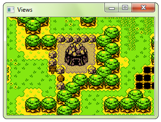Если вы не хотите определять представление при построении или хотите изменить его позже, вы можете использовать эквивалентные сеттеры:
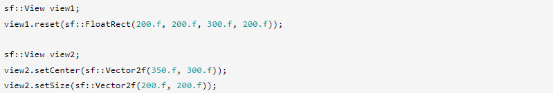Как только ваш вид определен, вы можете преобразовать его, чтобы он отображал переведенную/повернутую/масштабированную версию вашего 2D-мира.
Перемещение (прокрутка) вида
В отличие от рисуемых сущностей, таких как спрайты или фигуры, положение которых определяется их левым верхним углом (и может быть изменено на любую другую точку), представления всегда управляются их центром — это просто более удобно. Вот почему функция для изменения положения представления называется setCenter, а не setPosition.
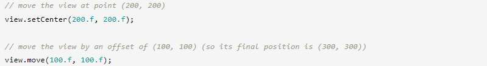 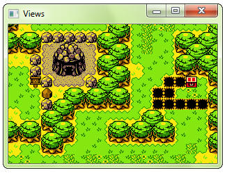Вращение вида
Чтобы повернуть вид, используйте функцию setRotation.
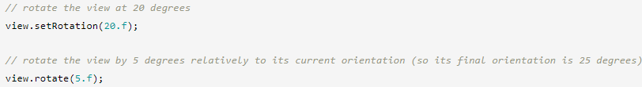 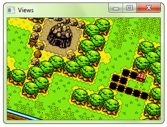Масштабирование вида
Увеличение (или уменьшение) представления выполняется посредством изменения его размера, поэтому используемая функция — setSize.
 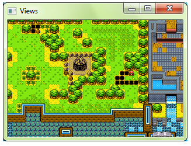
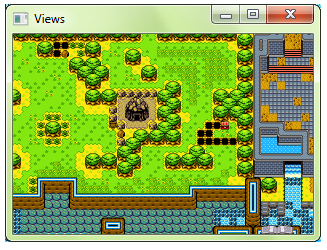
Определение способа просмотра представления
Теперь, когда вы определили, какая часть 2D-мира видна в окне, давайте определим, где она отображается. По умолчанию просматриваемое содержимое занимает все окно. Если представление имеет тот же размер, что и окно, все отображается в масштабе 1:1. Если представление меньше или больше окна, все масштабируется, чтобы соответствовать окну.
Это поведение по умолчанию подходит для большинства ситуаций, но иногда его может потребоваться изменить. Например, чтобы разделить экран в многопользовательской игре, вы можете использовать два вида, каждый из которых занимает только половину окна. Вы также можете реализовать мини-карту, нарисовав весь мир в виде, который отображается в небольшой области в углу окна. Область, в которой отображается содержимое представления, называется окном просмотра.
Чтобы установить область просмотра представления, вы можете использовать функцию setViewport.
 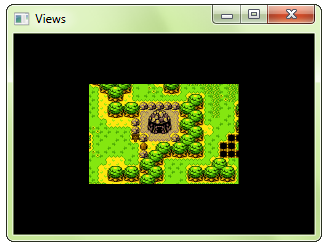
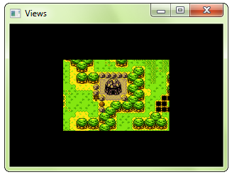
Возможно, вы заметили нечто очень важное: область просмотра определяется не в пикселях, а как отношение размера окна. Это более удобно: позволяет не отслеживать события изменения размера, чтобы обновлять размер области просмотра каждый раз, когда изменяется размер окна. Это также более интуитивно понятно: вы, вероятно, в любом случае определили бы область просмотра как часть всей площади окна, а не как прямоугольник фиксированного размера.
Используя окно просмотра, легко разделить экран для многопользовательских игр:
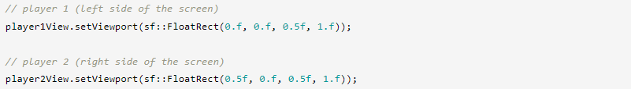
... или мини-карта:
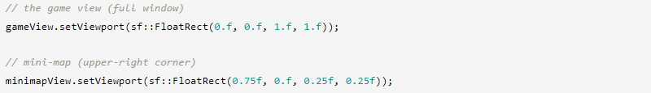 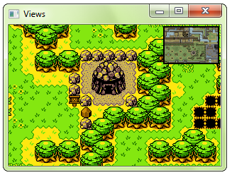Использование представления
Чтобы нарисовать что-то с помощью представления, вы должны нарисовать это после вызова функции setView цели, к которой вы рисуете (sf::RenderWindow или sf::RenderTexture).
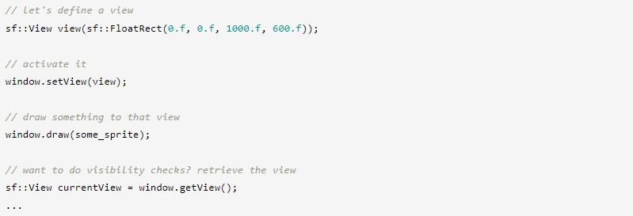Вид остается активным, пока вы не установите другой. Это означает, что всегда есть вид, который определяет, что появляется в мишени и где это нарисовано. Если вы явно не задали какое-либо представление, цель рендеринга использует собственное представление по умолчанию, которое соответствует его размеру 1:1. Вы можете получить вид цели рендеринга по умолчанию с помощью функции getDefaultView. Это может быть полезно, если вы хотите определить свой собственный вид на его основе или восстановить его для рисования фиксированных объектов (например, GUI) поверх вашей сцены.
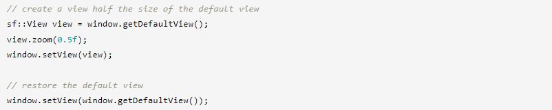Когда вы вызываете setView, цель рендеринга создает копию представления и не сохраняет указатель на тот, который был передан. Это означает, что всякий раз, когда вы обновляете свое представление, вам нужно снова вызывать setView, чтобы применить изменения.
Не бойтесь копировать представления или создавать их на лету, это не дорогие объекты (они просто содержат несколько значений с плавающей запятой).
Отображение дополнительных сведений при изменении размера окна
Поскольку вид по умолчанию никогда не меняется после создания окна, просматриваемое содержимое всегда остается одним и тем же. Поэтому, когда размер окна изменяется, все сжимается/растягивается до нового размера.
Если вместо этого поведения по умолчанию вы хотите показывать больше/меньше вещей в зависимости от нового размера окна, все, что вам нужно сделать, это обновить размер представления с размером окна.
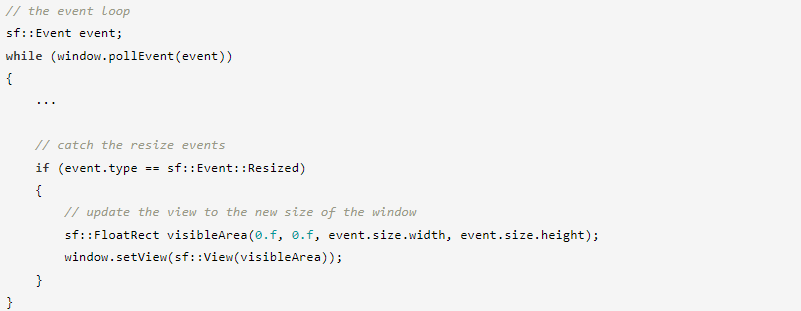Преобразования координат
Когда вы используете пользовательский вид или когда вы изменяете размер окна без использования приведенного выше кода, пиксели, отображаемые на цели, больше не соответствуют единицам измерения в 2D-мире. Например, нажатие на пиксель (10, 50) может попасть в точку (26,5, -84) вашего мира. В конечном итоге вам придется использовать функцию преобразования для сопоставления ваших пиксельных координат с мировыми координатами: mapPixelToCoords.
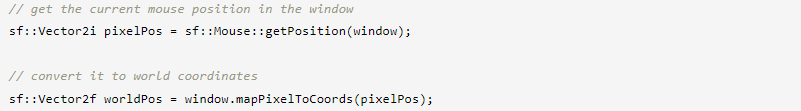По умолчанию mapPixelToCoords использует текущее представление. Если вы хотите преобразовать координаты, используя представление, которое не является активным, вы можете передать его в качестве дополнительного аргумента функции.
Обратное преобразование мировых координат в пиксельные координаты также возможно с помощью функции mapCoordsToPixel.